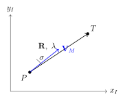

Chapter 20: Guidance, Navigation and Control¶
20.1 Introduction to Guidance, Navigation and Control¶
Guidance, Navigation and Control (GNC) constitutes the intellectual core of every precision strike system. Without it, a missile is merely a rocket that happens to carry a warhead; with it, a weapon can thread through a window at 1000 km range. The three disciplines are distinct yet tightly coupled:
- Guidance
- is the process of shaping the trajectory so that the vehicle intercepts a desired point in space at the desired time (or minimises miss distance). The guidance law computes the acceleration command \(\mathbf{a}_c\) required to correct the predicted trajectory error.
- Navigation
- is the process of estimating the vehicle’s state (position, velocity, attitude) from sensors. The navigation system answers: where am I, how fast am I going, and which way am I pointing?
- Control
- is the process of executing the acceleration command through aerodynamic surfaces, thrust vector control, or reaction jets. The autopilot closes the inner loop, achieving the demanded acceleration despite aerodynamic uncertainties and disturbances.
The system hierarchy is:
Typical closed-loop bandwidths are: seeker/tracker \(\sim\!1\,\text{Hz}\), guidance \(\sim\!2\,\text{Hz}\), autopilot \(\sim\!20\,\text{Hz}\), actuator \(\sim\!50\,\text{Hz}\).
20.2 Terminal Guidance Geometry and Kinematics¶
20.2.1 Engagement Geometry¶
Consider a two-dimensional engagement in the horizontal plane (the extension to 3-D is straightforward). Let:
-
\(P\) — pursuer (missile) position vector \(\mathbf{r}_P\)
-
\(T\) — target position vector \(\mathbf{r}_T\)
-
\(\mathbf{R} = \mathbf{r}_T - \mathbf{r}_P\) — relative position (range vector), \(R = |\mathbf{R}|\)
-
\(\lambda\) — line-of-sight (LOS) angle, measured from a fixed inertial reference (e.g., North)
-
\(\sigma\) — lead angle: angle between missile velocity vector \(\mathbf{V}_M\) and the LOS
-
\(q\) — look angle: angle between missile body axis and the LOS (same as \(\sigma\) for a thrust-pointed missile)

20.2.2 Relative Motion Equations¶
The time derivative of the range vector in inertial frame:
Resolving into components along the LOS (range axis \(\hat{R}\)) and perpendicular to it (\(\hat{\lambda}\)):
where the closing velocity \(V_c\) is defined as:
The LOS angular rate is:
At intercept, \(R \to 0\). For the collision triangle (zero miss distance) we require \(\dot{\lambda} \to 0\), i.e. the LOS must become stationary — the fundamental intercept condition.
20.2.3 Zero-Effort Miss Distance¶
The Zero-Effort Miss (ZEM) is the miss distance that would result if no further control action were taken from the current time \(t\) to the estimated intercept time \(t_f\). For a non-manoeuvring target:
where \(t_{go} = t_f - t\) is the time-to-go. For a manoeuvring target with lateral acceleration \(a_T\):
20.3 Proportional Navigation Guidance¶
20.3.1 Basic Proportional Navigation¶
Proportional Navigation (PN) is the most widely used homing guidance law. Its intellectual origins trace to World War II. The basic law states that the missile lateral acceleration command is proportional to the LOS rate and the closing speed:
where \(N\) is the navigation ratio (effective navigation constant), dimensionless. The quantity \(N V_c\) is the effective navigation gain with units of \(\text{m s 2}\) per \(\text{r a d s}\).
Physical interpretation.
PN commands the missile to rotate its velocity vector at \(N\) times the rate at which the LOS rotates. A stationary LOS (\(\dot{\lambda}=0\)) means no correction is needed — the missile is already on a collision course.
20.3.2 Variants of Proportional Navigation¶
There are three principal variants, distinguished by the direction in which the acceleration is applied:
| Variant | Abbrev. | Acceleration direction | Notes |
|---|---|---|---|
| True PN | TPN | Perpendicular to LOS \(\hat{R}\) | Theoretically optimal for non-manoeuvring target; requires range measurement |
| Pure PN | PPN | Perpendicular to \(\mathbf{V}_M\) | Does not need range; most practical; used in IR-guided missiles |
| Generalised PN | GPN | Perpendicular to \(\mathbf{V}_M\), generalised \(N\) | Unifies TPN/PPN |
| Ideal PN | IPN | Perpendicular to LOS; uses true range | Academic reference |
True PN (TPN)¶
Direction \(\hat{\perp}_R\) is perpendicular to the LOS vector. TPN requires measurement of both \(\dot{\lambda}\) and \(V_c\); a seeker directly provides \(\dot{\lambda}\) but \(V_c\) must be estimated from ranging.
Pure PN (PPN)¶
Direction \(\hat{\perp}_{V_M}\) is perpendicular to the missile velocity vector. PPN is the most common implementation because the commanded acceleration is naturally in the plane of the manoeuvre and requires no range measurement when \(V_c\) is replaced by \(V_M\).
20.3.3 Augmented Proportional Navigation (APN)¶
When the target performs a known (or estimated) lateral acceleration \(a_T\), the Augmented PN law accounts for this:
The second term is the feed-forward component that compensates for target manoeuvre. The factor \(N/2\) comes from the linear optimal guidance derivation (Section 20.4). For \(N=4\), the gain on \(a_T\) is 2, which is intuitively correct: the missile must pull twice as hard as the target to maintain the collision triangle when \(t_{go}\) is finite.
20.3.4 Navigation Ratio Analysis¶
Optimal N¶
Linear homing analysis (adjoint method) shows that the miss distance for a step target manoeuvre \(a_T\) with time-to-go \(t_{go}\) is:
where \(f(N,\tau)\) accounts for autopilot lag \(\tau\). Without lag:
Increasing \(N\) decreases miss distance but demands higher peak acceleration. The peak acceleration command normalised by \(a_T\) is:
Minimum Navigation Ratio¶
For a collision course to be stable, \(N > 2\) is required. With \(N = 2\), the missile can intercept a non-manoeuvring target on a tail-chase but has zero margin. For \(N < 2\) the guidance law is divergent.
Practical recommendation: \(N = 3\) to \(5\). Most fielded systems use \(N = 4\) as a compromise between miss distance and peak demand.
| \(N\) | Stability | \(a_{c,\text{peak}}/a_T\) | Miss (step \(a_T\), \(t_{go0}=5\,\text{s}\)) | Remark |
|---|---|---|---|---|
| 2.0 | Marginal | \(\infty\) | \(\infty\) | Unstable for manoeuvring target |
| 3.0 | Stable | 3.0 | Large | Minimum practical |
| 4.0 | Good | 2.0 | Moderate | Standard choice |
| 5.0 | Better | 1.67 | Small | Diminishing returns |
| 6.0 | Good | 1.5 | Smaller | Higher acceleration demand |
20.3.5 Capture Region and Intercept Conditions¶
For a PN homing missile to intercept the target, the initial conditions must lie within the capture region. For TPN, the necessary and sufficient condition for intercept of a constant-velocity target is:
In practice, the capture region is sufficiently large for head-on engagements but can be restrictive for tail-chase geometries (small \(V_c\), large aspect angles).
20.4 Optimal Guidance Laws¶
20.4.1 Minimum-Energy Formulation¶
Consider the intercept problem as a linear optimal control problem. The state is the lateral displacement \(y\) and velocity \(\dot{y}\) perpendicular to the nominal LOS; the control is lateral acceleration \(u\). The cost functional to be minimised is:
Taking \(q \to \infty\) (hard terminal constraint, zero miss distance) and solving via the Pontryagin maximum principle gives:
where \(N = 3\) for the minimum-energy solution (without autopilot lag). This is identical in structure to PN with \(N=3\) when \(\mathrm{ZEM} = R\dot{\lambda}t_{go}\).
20.4.2 Hamiltonian Derivation¶
Define state \(\mathbf{x} = [y,\; \dot{y},\; a_T]^\top\), target acceleration \(a_T\) modelled as a first-order Markov process with time constant \(\tau_T\). The Hamiltonian is:
Optimality condition \(\partial H/\partial u = 0\):
The costate equations \(\dot{\mathbf{p}} = -\partial H / \partial \mathbf{x}\) yield:
Applying terminal boundary condition \(p_2(t_f) = q\,y(t_f)\) and solving back through \(t_{go}\) gives the closed-form ZEM-based guidance law ((20.16)).
20.4.3 Impact Angle Constrained Guidance¶
Modern precision strike may require the missile to arrive at the target at a specific impact angle \(\gamma_f\) (e.g., top-attack against armour). Adding this terminal condition modifies the guidance law to:
where \(\dot{y}_{\text{des}} = V_M\sin(\gamma_f - \gamma_{\mathrm{ref}})\) is the desired terminal lateral velocity. Values \(N_1 = 6\), \(N_2 = 2\) satisfy both zero-miss and impact-angle terminal conditions.
20.4.4 Salvo and Cooperative Guidance¶
For simultaneous impact by a salvo of \(M\) missiles, the time-to-go of all missiles must be equalised. Each missile \(i\) adjusts its speed profile to arrive at time \(t_s^*\):
The slower missiles accelerate; the faster missiles weave or throttle back. The lateral guidance law for each missile remains PNG, but the reference approach vector is adjusted to produce the desired \(t_{go}\).
20.5 Command Guidance Systems¶
20.5.1 Command to Line-of-Sight (CLOS)¶
In CLOS guidance, the missile is commanded to stay on the Line Of Sight from a ground (or ship-based) tracker to the target. This is a three-point guidance law:
where \(\Delta_\perp\) is the lateral deviation from the LOS and \((\omega_L, \zeta_L)\) are guidance bandwidth and damping. CLOS inherently increases accuracy with decreasing range because the beam divergence decreases as \(\Delta_\perp / R\).
Accuracy: Miss distance of CLOS is approximately:
where \(\sigma_\theta\) is the tracker angular noise. CLOS degrades with range — the opposite of proportional navigation.
20.5.2 Semi-Active Command to Line-of-Sight (SACLOS)¶
SACLOS is used in wire-guided ATGMs (AT-3 Sagger, Milan, TOW). The operator keeps the crosshair on the target; a tracker measures missile position via IR flare or laser; error \(\epsilon\) is computed and transmitted to the missile:
20.5.3 Track-via-Missile (TVM)¶
TVM (used in Patriot PAC-2) retains a seeker on the missile but the signal processing is done in the ground radar computer:
-
Missile seeker measures angle to target
-
Measurements are downlinked to ground
-
Ground computer runs guidance law and uplinks acceleration command
-
Missile executes command via autopilot
This allows more capable signal processing than an on-board computer and facilitates ECM-resistant guidance.
20.5.4 Beam Riding¶
In laser beam riding (used in Starstreak, Trigat), the missile flies down the axis of a laser beam pointed at the target. The beam is structured with a coded spatial pattern; the missile rear-facing detector measures its position within the beam cross-section.
Beam width \(\theta_b\) at range \(R\): \(w = \theta_b R\). Noise at beam edge grows with range, giving miss distance:
Advantages: entirely passive missile (no RF emissions); simple seeker; highly resistant to radar ECM. Disadvantage: accuracy degrades with range.
20.6 Inertial Navigation Systems¶
20.6.1 Principles of Inertial Navigation¶
An INS integrates specific force (accelerometer output) twice to obtain position, and integrates angular rate (gyroscope output) once to maintain attitude. The fundamental mechanisation equations in the Earth-Centred Earth-Fixed (ECEF) frame are:
where \(\mathbf{f}^b\) is specific force in body frame, \(\mathbf{C}_b^e\) is the Direction Cosine Matrix (DCM) from body to ECEF, \(\boldsymbol{\Omega}^e\) is the Earth rotation tensor, and \(\mathbf{g}^e\) is the gravitational acceleration.
20.6.2 Strapdown vs Gimballed INS¶
| Attribute | Gimballed (stable platform) | Strapdown |
|---|---|---|
| Sensor mounting | On isolated platform; sensors in local-level frame | Rigidly attached to airframe |
| Attitude computation | Mechanical (gimbal angles) | Numerical (quaternion/DCM) |
| Dynamic range | Low (platform absorbs motion) | High (full vehicle rates) |
| Computational load | Low | High (attitude update \(\geq400\,\text{Hz}\)) |
| Volume/mass | Large, complex gimbals | Compact, no moving parts |
| Cost | High ($100k–$500k legacy) | Moderate to low |
| Examples | Litton LN-3, Honeywell H-770 | Honeywell H-764G, Northrop LN-251 |
20.6.3 Error Sources and Schuler Oscillation¶
Accelerometer Bias¶
An accelerometer bias \(b_a\) (m s 2) produces velocity error:
and position error:
For a tactical INS with \(b_a = 100\,\text{g}\) (\(\approx 10⁻³\,\text{m s 2}\)) and flight time \(t = 60\,\text{s}\): \(\delta r = \tfrac{1}{2} \times 10^{-3} \times 3600 = 1.8\,\text{m}\).
Gyroscope Drift¶
Gyro drift \(\varepsilon\) (d e g h r) introduces tilt angle \(\phi \approx \varepsilon t\), which causes accelerometer output to mix with gravity:
Schuler Oscillation¶
The free oscillation of a perfectly tuned INS coupled to gravity has period:
This is the period of a pendulum with length equal to the Earth’s radius \(R_E\). Schuler tuning ensures that an INS moving horizontally does not sense the centripetal acceleration of Earth’s curvature as a tilt, preventing divergent growth of horizontal position error. Errors in Schuler-tuned INS are bounded (oscillatory at \(T_S\)) rather than secular — a key design property.
20.6.4 Gyroscope Technologies¶
Ring Laser Gyroscope (RLG)¶
The RLG exploits the Sagnac effect: counter-propagating laser beams in a closed ring path exhibit a beat frequency proportional to rotation rate:
where \(A\) is ring area, \(\Omega\) rotation rate, \(n\) refractive index, \(\lambda\) laser wavelength, \(P\) perimeter. Lock-in occurs at low rotation rates when the two beams couple through backscatter. It is mitigated by dithering (mechanically oscillating the ring at \(\sim\!400\,\text{Hz}\)).
Typical RLG performance: drift \(0.003\,\text{° h}\), scale factor stability 5 ppm.
Fibre Optic Gyroscope (FOG)¶
The FOG uses a long coil of optical fibre (100–5000 m) instead of a glass ring. The Sagnac beat frequency is the same equation but with \(P \to\) fibre length (effectively increasing sensitivity). No lock-in because polarisation-maintaining fibre prevents backscatter coupling. FOG is smaller, cheaper, and more shock-tolerant than RLG. Typical drift: \(0.1\,\text{° h}\) (tactical), \(0.01\,\text{° h}\) (navigation grade).
MEMS Gyroscope¶
MEMS gyros use vibrating proof masses (Coriolis effect). Drift typically \(10\,\text{° h}\) to \(1000\,\text{° h}\). Used in low-cost UAVs, guided munitions (e.g., JDAM course correction). Not suitable for autonomous navigation over long times without GPS aiding.
| Technology | Drift (° h r) | ARW (°) | Size | Cost | Applications |
|---|---|---|---|---|---|
| MEMS | 10–1000 | 0.1–10 | Very small | $10–100 | UAV, guided rocket |
| FOG (tac.) | 0.1–10 | 0.01–0.3 | Small | $1k–10k | Cruise missile, UAV |
| FOG (nav.) | 0.001–0.1 | 0.001–0.01 | Medium | $10k–100k | Cruise missile |
| RLG | 0.001–0.01 | 0.001–0.005 | Medium | $20k–200k | ICBM, aircraft, ship |
| Cold-atom | \(10^{-5}\) | \(10^{-5}\) | Large | Research | Strategic, future |
20.6.5 INS/GPS Integration¶
Loosely-Coupled Integration¶
The GPS receiver outputs position and velocity fixes at \(\sim\!10\,\text{Hz}\). A Kalman filter blends these with INS propagated position/velocity:
State vector: 15 elements (position 3, velocity 3, attitude 3, accel. bias 3, gyro drift 3). Observation matrix \(\mathbf{H}\) selects position (or velocity) from state.
Tightly-Coupled Integration¶
Rather than using GPS position/velocity, the tightly-coupled architecture uses raw GPS pseudorange and pseudorange-rate observables:
where \(\mathbf{r}_i^{\mathrm{sv}}\) is satellite \(i\) position, \(c\) speed of light, \(\delta t\) receiver clock error. Advantage: continues to function with fewer than four satellites visible (GPS jammed on some channels).
RAIM (Receiver Autonomous Integrity Monitoring)¶
RAIM detects faulty GPS signals by checking consistency of redundant measurements. For aviation use, \(H_{\mathrm{mi}} < 10^{-7}\) per approach. Military systems additionally employ Anti-Spoofing (A/S) and selective use of dual-frequency M-code.
20.7 GPS-Aided Guidance¶
20.7.1 GPS Accuracy Modes¶
| Mode | Horizontal | Vertical | Notes |
|---|---|---|---|
| SPS (L1 C/A) civil | 3–5 m | 7–10 m | Selective availability removed 2000 |
| PPS (P(Y)-code) military | \(<\)1 m | \(<\)2 m | Anti-spoofing; M-code successor |
| SBAS/WAAS | 1–3 m | 1–4 m | Ionosphere corrections via geostationary |
| DGPS (ground augmentation) | 0.1–1 m | 0.1–2 m | Requires reference station |
| RTK | 1–3 cm | 2–5 cm | Carrier phase; post-processing or real-time |
20.7.2 GPS Jamming and Vulnerability¶
A GPS receiver requires \(\sim -130\,\text{dBm}\) signal from the satellite (path loss \(\sim 184\,\text{dB}\) at 20200 km). A ground jammer of EIRP \(P_J G_J\) jams at range \(R_J\):
where \(G_{r,J}/G_{r,sv}\) is the ratio of receiver antenna gain toward jammer vs satellite. Modern handheld jammers (1 W) can deny GPS within \(\sim\!1\,\text{km}\).
20.7.3 Anti-Jam Techniques¶
CRPA (Controlled Reception Pattern Antenna).
A 7-element phased array null-steers the antenna pattern toward jammers while maintaining gain toward satellites. A 7 e l e m e n t array provides \(\sim\! 20\,\text{dB}\) null depth and up to \(N-1 = 6\) simultaneous nulls.
IMU Coast.
On GPS outage, the INS coasts using the last known GPS fix. Position error grows according to Section 20.6 equations — acceptable for short outages (\(<10\,\text{s}\) for navigation-grade IMU).
20.7.4 JDAM as Case Study¶
The Joint Direct Attack Munition (JDAM, GBU-31/32/38) is the canonical INS+GPS guided weapon:
-
GPS antenna and INS in tail kit; no seeker
-
CEP: \(\sim\!9\,\text{m}\) with GPS, \(\sim\!30\,\text{m}\) GPS-denied
-
Guidance law: PN with ZEM correction; no seeker required
-
JDAM-ER extends range to \(80\,\text{km}\) with glide kit
-
SDB (Small Diameter Bomb) adds INS/GPS + data-link + radar seeker (SDB II)
20.8 Terrain Reference Navigation¶
20.8.1 TERCOM (Terrain Contour Matching)¶
TERCOM is used in the Tomahawk cruise missile and AGM-86 ALCM. It operates by comparing the terrain profile measured by a radar altimeter against a pre-stored Digital Elevation Model (DEM).
Algorithm¶
For each candidate position offset \((\delta x, \delta y)\) in a search grid, compute the Mean Absolute Difference (MAD) between measured profile \(h_m(i)\) and map profile \(h_s(i, \delta x, \delta y)\):
The position fix is the \((\delta x^*, \delta y^*)\) minimising MAD. Accuracy depends on terrain roughness (standard deviation of terrain heights \(\sigma_T\)):
where \(\sigma_n\) is altimeter noise and \(\Delta x\) is pixel spacing. Flat terrain (low \(\sigma_T\)) gives poor TERCOM fixes — over oceans or deserts the system must coast on INS.
20.8.2 DSMAC (Digital Scene Matching Area Correlator)¶
DSMAC provides terminal guidance using electro-optical (EO) camera:
-
Pre-programmed target image (DTED/SPOT imagery) stored in memory
-
Terminal EO camera captures scene
-
2-D cross-correlation locates target centroid
-
INS is updated; guidance corrects trajectory
Cross-correlation score:
DSMAC accuracy: \(<\!3\,\text{m}\) CEP. Limitation: requires pre-planned target image; vulnerable to camouflage, weather, and scene changes.
20.8.3 Tomahawk Block IV Guidance Suite¶
The Tomahawk (BGM-109) integrates four navigation modes:
-
INS — continuous; degrades at \(\sim\!1.5\,\text{km h r}\) (navigation-grade)
-
GPS — fixes INS every \(\sim\!1\,\text{min}\); maintains \(<\!15\,\text{m}\)
-
TERCOM — terrain fixes at designated waypoints over suitable terrain
-
DSMAC — terminal phase; improves to \(<\!5\,\text{m}\) CEP
Composite CEP: \(5\)–\(10\,\text{m}\) for fixed hard targets.
20.9 Seekers in the Guidance Loop¶
20.9.1 Seeker Angle Measurement¶
The seeker measures the angle from the missile body axis to the target. The total LOS angle in the inertial frame is:
where \(q\) is the gimbal angle (seeker bore-sight to body axis) and \(\theta_M\) is the missile pitch angle. The LOS rate:
A rate gyro on the seeker gimbal measures \(\dot{q}\) directly; for a strapdown seeker, IMU rate must be subtracted.
20.9.2 Seeker Transfer Function and Noise¶
The seeker angle tracking loop has a first-order lag:
where \(\tau_s\) is the seeker time constant (typically \(0.1\,\text{s}\)–\(0.5\,\text{s}\)). Seeker noise \(\sigma_{q}\) appears at the seeker output; it is amplified by the navigation gain to produce acceleration noise:
Seeker noise spectral density: \(\sigma_{\dot{\lambda}} \approx 10⁻³\,\text{r a d s}\) (typical IR seeker).
20.9.3 Parasitic Loop and Body Bending¶
The seeker measures \(\dot{q}\) which includes a contribution from missile body rotation \(\dot{\theta}_M\). The parasitic loop is the feedback path from acceleration command \(\to\) body motion \(\to\) gimbal rate \(\to\) guidance command (see Figure 20.2). The parasitic loop gain:
Instability occurs when \(K_p\) exceeds the stability margin. Design requirement: seeker bandwidth must be low enough that body rates are attenuated.
20.9.4 Kalman Filter for Target State Estimation¶
For manoeuvring targets, a Kalman filter estimates target acceleration:
State: \(\mathbf{x} = [y_T, \dot{y}_T, \ddot{y}_T]^\top\) (cross-range position, velocity, acceleration).
Process model: Singer model for target acceleration:
Measurement: LOS angle \(\lambda = \arctan(y_T/x_T) + v_\lambda\), \(v_\lambda \sim \mathcal{N}(0, R_\lambda)\).
The standard EKF equations update the state and covariance:
20.10 Autopilot Design¶
20.10.1 Acceleration Autopilot Architecture¶
The autopilot converts the guidance law’s demanded lateral acceleration \(a_c\) into an aerosurface deflection command \(\delta_c\). The missile aerodynamic transfer function (short-period approximation) from fin deflection \(\delta\) to lateral acceleration \(a\) at CG is:
where \(\omega_\alpha\) is the airframe short-period frequency, \(\zeta_\alpha\) damping ratio, \(K_\delta\) gain, \(T_2\) zero location (related to centre-of-pressure vs centre-of-gravity offset).
Three-loop autopilot.
The most common architecture has three nested loops:
-
Inner loop — fin rate feedback (rate gyro); stabilises fin position
-
Middle loop — pitch rate feedback \(q\) (rate gyro); improves damping
-
Outer loop — accelerometer feedback \(a\); ensures \(a \to a_c\)
The closed-loop transfer function from \(a_c\) to \(a\):
Target: \(\omega_{cl} \approx 20\,\text{r a d s}\), \(\zeta_{cl} = 0.7\).
20.10.2 Gain Scheduling¶
Aerodynamic derivatives depend strongly on dynamic pressure and Mach number:
The normal force coefficient \(C_N\) and moment coefficient \(C_M\) vary with \(M\) and angle-of-attack \(\alpha\). Autopilot gains must be scheduled against \(q_\infty\) and \(M\) to maintain consistent closed-loop bandwidth across the flight envelope. A typical schedule uses a 2-D look-up table: \(K = f(q_\infty, M)\).
20.10.3 Roll Autopilot for Cruciform Missiles¶
Cruciform missiles (4 fins in \(\times\) or \(+\) configuration) must maintain roll angle to decouple pitch and yaw. Roll rate command \(p_c = K_\phi(\phi_c - \phi)\); the roll loop bandwidth must be high enough (\(> 10\,\text{Hz}\)) to decouple from the pitch/yaw loops.
20.10.4 Thrust Vector Control Autopilot¶
At low dynamic pressure (immediately after launch), aerodynamic surfaces are ineffective. TVC (jet vanes, gimballed nozzle, or secondary injection) provides control forces proportional to thrust \(F_T\):
where \(d_T\) is the moment arm and \(\delta_T\) the nozzle deflection. The autopilot blends aerodynamic and TVC control according to dynamic pressure:
with \(W_{aero} + W_{TVC} = 1\) and weights varying linearly from \(W_{TVC}=1\) at launch to \(W_{TVC}=0\) at maximum speed.
20.11 Six-Degree-of-Freedom Simulation¶
20.11.1 Coordinate Frames¶
Four frames are required in a full 6-DOF simulation:
- Inertial (I)
- Earth-Centred Inertial (ECI) or local NED; origin at launch point; non-rotating (or slowly rotating for long-range).
- Body (B)
- Origin at CG; \(x_B\) forward, \(y_B\) starboard, \(z_B\) down.
- Wind (W)
- \(x_W\) along velocity vector; \(z_W\) in plane of symmetry.
- Seeker
- Origin at seeker gimbal pivot; aligned with seeker LOS.
The Direction Cosine Matrix \(\mathbf{C}_B^I\) transforms vectors from body to inertial:
\(\mathbf{C}_B^I\) is a \(3\times3\) orthogonal matrix parameterised by Euler angles \((\phi, \theta, \psi)\):
20.11.2 Quaternion Attitude Representation¶
Euler angles suffer from gimbal lock (\(\theta \to \pm 90°\)). Quaternions avoid this:
The kinematic differential equation:
where:
and \(\boldsymbol{\omega} = [p, q, r]^\top\) is the body angular rate vector. The quaternion must be renormalised at each integration step to prevent drift.
20.11.3 Equations of Motion¶
The full 6-DOF rigid body equations in the body frame:
Force equations:
Moment equations (Euler’s equations):
where \((u,v,w)\) are body-frame velocity components, \((p,q,r)\) angular rates, \((F_x,F_y,F_z)\) total body forces, \((L,M,N)\) total body moments, and \(I_{xx},I_{yy},I_{zz}\) principal moments of inertia.
20.11.4 Aerodynamic Coefficient Tables¶
Aerodynamic forces and moments are represented as tabulated functions of:
-
Mach number \(M\): typically \(0.3\)–\(5.0\) in 20–30 increments
-
Angle of attack \(\alpha\): \(-20°\) to \(+20°\) for small \(\alpha\); \(0°\)–\(180°\) for ballistic re-entry
-
Sideslip angle \(\beta\): \(-20°\) to \(+20°\)
-
Control deflection \(\delta\): \(-20°\) to \(+20°\)
Forces:
Bilinear interpolation between table entries:
20.11.5 Actuator Model¶
The actuator is modelled as a first-order system with rate and position limits:
with limits:
Rate limiting is the dominant nonlinearity at high-frequency inputs and can destabilise the autopilot (pilot-induced oscillation analogue).
20.11.6 Monte Carlo Analysis¶
Deterministic 6-DOF simulation gives the nominal trajectory. Practical performance is assessed by Monte Carlo (MC) simulation:
-
Define dispersions: sensor errors, IMU biases, aerodynamic coefficient uncertainty, target manoeuvre model, launch condition errors.
-
Run \(N_{\mathrm{MC}} = 1000\)–\(10\,000\) trials, each with independently sampled dispersions.
-
Compute miss distance CDF. CEP = median of \(|\mathbf{r}_{\mathrm{miss}}|\).
-
Compute Pk (probability of kill) using warhead lethal radius \(R_L\): \(P_k = 1 - \exp(-R_L^2 / (2\sigma_m^2))\) (Gaussian assumption).
| Parameter | Symbol | Typical \(1\sigma\) Value |
|---|---|---|
| Gyro drift | \(\varepsilon\) | \(0.1\)–\(1.0\;\text{° h}\) |
| Accel. bias | \(b_a\) | \(100\)–\(300\;\text{g}\) |
| Seeker angle noise | \(\sigma_q\) | \(0.5\)–\(2\;\text{m r a d}\) |
| \(C_N\) uncertainty | \(\Delta C_N/C_N\) | \(5\)–\(10\%\) |
| Wind (cross) | \(\sigma_w\) | \(2\)–\(5\;\text{m s}\) |
| Target position | \(\sigma_{T}\) | \(5\)–\(50\;\text{m}\) |
| Target manoeuvre | \(\sigma_{a_T}\) | \(3\)–\(9g\) |
20.11.7 Target Models in Simulation¶
- Constant velocity (CV)
- \(\ddot{\mathbf{r}}_T = 0\). Simplest; used for initial design.
- Constant acceleration (CA)
- \(\dddot{\mathbf{r}}_T = 0\). Accounts for steady manoeuvre.
- Singer model
- Target acceleration is first-order Markov with manoeuvre time constant \(\tau_T = 1\,\text{s}\)–\(5\,\text{s}\) and manoeuvre magnitude \(\sigma_{a_T} = 3g\)–\(9g\).
- Evasive weave
- Sinusoidal lateral acceleration at \(f = 0.1\)–\(0.5\,\text{Hz}\); adversarial case.
- Jink
- Random step accelerations; statistically specified.
20.12 Advanced Topics and Emerging Trends¶
20.12.1 Integrated Guidance and Control (IGC)¶
Traditional designs separate the guidance (outer) and autopilot (inner) loops with a clear time-scale separation. Integrated Guidance and Control merges the two, directly commanding control surface deflections from the target state:
where \(\mathbf{e}\) is the full state error and \(\mathbf{B}\) is the control effectiveness matrix. IGC is particularly beneficial at high angles of attack and when fin authority is limited (agile AAMs).
20.12.2 Sliding Mode Guidance¶
The sliding surface \(s = \dot{\lambda} + c\lambda = 0\) defines the desired zero-miss manifold. The sliding mode guidance law:
provides robustness against target manoeuvre and model uncertainty at the cost of chattering (finite switching frequency). Higher-order SMC (HOSMC) reduces chattering.
20.12.3 Model Predictive Guidance (MPG)¶
At each time step, a finite-horizon optimisation is solved:
subject to: \(\mathbf{x}_{k+1} = f(\mathbf{x}_k, u_k)\), \(|u_k| \leq u_{\max}\), \(\mathbf{x}_N \in \mathcal{X}_f\).
MPG can handle mixed objectives (miss distance + arrival time + impact angle) and explicit control constraints. Real-time implementation requires warm-starting and quadratic programming (QP) solvers (\(<\!1\,\text{ms}\) with current FPGA implementations).
20.12.4 Machine Learning in GNC¶
Reinforcement learning (RL) has demonstrated guidance laws competitive with optimal guidance in simulation:
-
Proximal Policy Optimisation (PPO) trained against evasive manoeuvring targets; achieves near-optimal miss distance
-
Neural network autopilots for non-linear flight regimes (post-stall)
-
Sensor fusion using deep convolutional networks for passive infrared homing (IIR terminal guidance)
Challenges: certification; training data coverage; adversarial robustness. No fielded system (as of 2025) relies on RL for the primary guidance law.
20.12.5 Multi-Hypothesis Target Tracking¶
When a target is obscured or when multiple objects are detected, the Joint Probabilistic Data Association (JPDA) filter maintains multiple hypotheses:
where \(\beta_j^k\) are posterior probabilities of association with measurement \(j\). The Interacting Multiple Model (IMM) estimator handles target mode changes (non-manoeuvring \(\to\) manoeuvring):
where \(\Lambda_i^k\) is the likelihood of measurement under model \(i\) and \(p_{ji}\) is the transition probability.
20.13 Summary¶
Table 20.7 summarises the guidance systems discussed in this chapter with their performance characteristics.
| Guidance Type | Sensor Required | Typical CEP | Representative System |
|---|---|---|---|
| PNG (IR seeker) | Passive IR | 3–10 m | AIM-9X Sidewinder |
| PNG (active radar) | Active radar seeker | 1–5 m | AIM-120 AMRAAM |
| CLOS/SACLOS | Tracker + wire/radio | 0.5–2 m | Milan ATGM |
| TVM | Seeker + ground radar | 5–20 m | Patriot PAC-2 |
| INS + GPS | GPS + IMU | 5–30 m | JDAM |
| INS + TERCOM + DSMAC | Radar alt + EO + IMU | 5–10 m | Tomahawk Block IV |
| INS + GPS + IIR | GPS + IMU + IR FPA | 1–3 m | SDB II |
The chapter has shown that guidance law design is fundamentally an optimal control problem, navigation is a stochastic state estimation problem, and autopilot design is a classical control synthesis problem — the three disciplines converging in the closed-loop GNC system. Future trends include integrated guidance-and-control, real-time MPC, AI/ML guidance laws, and multi-missile cooperative engagement.